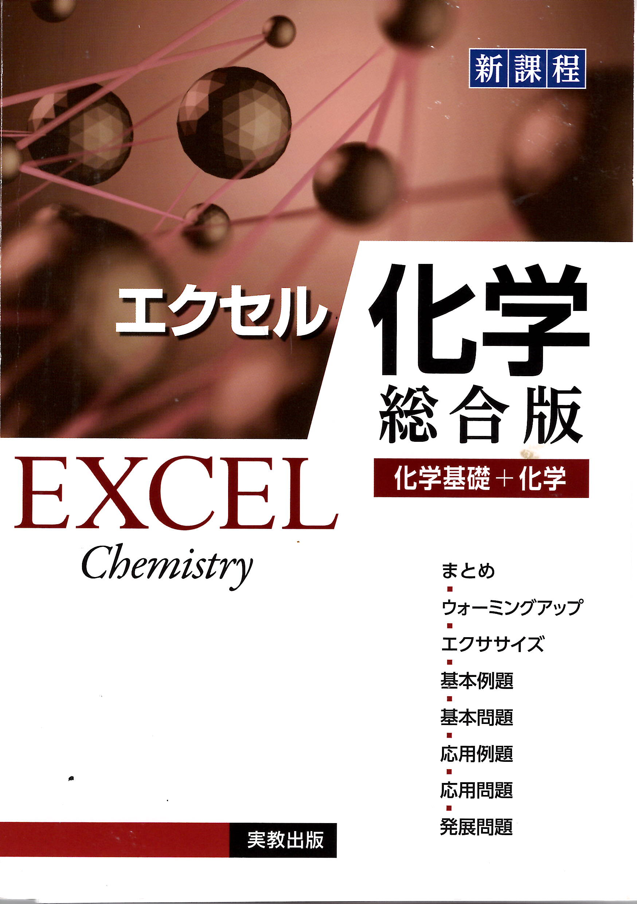

← ポータルに戻る
エクセル化学 [総合版] (新課程)
全784ページ

はじめに
p.1–15
第1章 物質の構成
p.16–67
▶
1
1. 物質の探究
p.16
2
2. 物質の構成粒子
p.28
3
3. 物質と化学結合
p.42
4
発展問題
p.60
第2章 物質の変化
p.68–151
▶
5
4. 物質量
p.68
6
5. 化学反応式と量的関係
p.88
7
6. 酸・塩基
p.100
8
7. 酸化還元反応
p.122
9
8. 電池・電気分解
p.134
10
発展問題
p.146
第3章 物質の状態と平衡
p.152–205
▶
11
9. 状態変化
p.152
12
10. 固体の構造
p.160
13
11. 気体の性質
p.168
14
12. 溶液の性質
p.182
15
発展問題
p.196
第4章 物質の変化と平衡
p.206–273
▶
16
13. 化学反応と熱エネルギー
p.206
17
14. 化学反応と光エネルギー
p.222
18
15. 反応の速さとしくみ
p.230
19
16. 化学平衡
p.240
20
発展問題
p.262
第5章 無機物質
p.274–341
▶
21
17. 非金属元素
p.274
22
18. 典型金属元素
p.298
23
19. 遷移元素
p.310
24
20. 金属イオンの分離と推定
p.322
25
21. 無機物質と人間生活
p.334
26
発展問題
p.338
第6章 有機化合物
p.342–413
▶
27
22. 有機化合物の特徴と分類
p.342
28
23. 脂肪族炭化水素
p.352
29
24. 酸素を含む脂肪族化合物
p.362
30
25. 芳香族化合物
p.382
31
発展問題
p.404
第7章 高分子化合物
p.414–466
▶
32
26. 糖
p.414
33
27. アミノ酸とタンパク質・核酸
p.422
34
28. 合成高分子化合物
p.432
35
29. 有機化合物と人間生活
p.444
36
発展問題
p.452
解答編
p.467–784